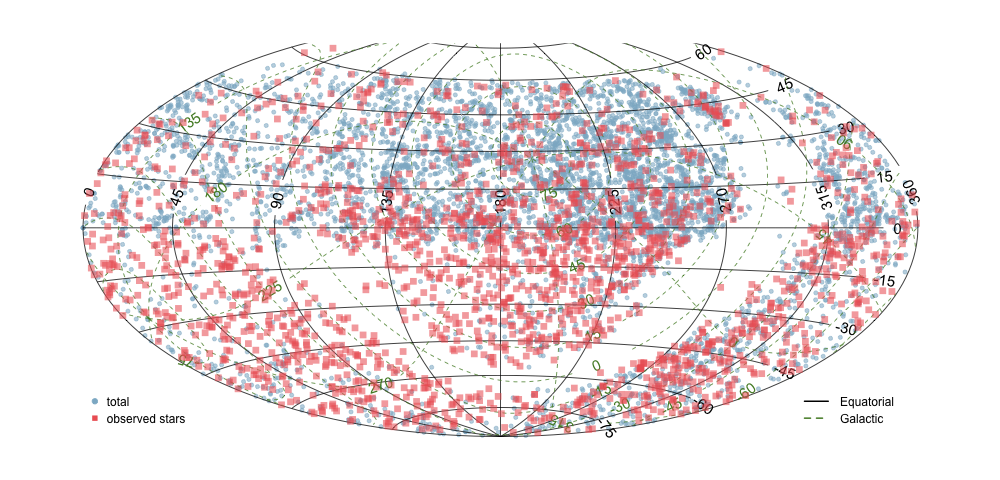
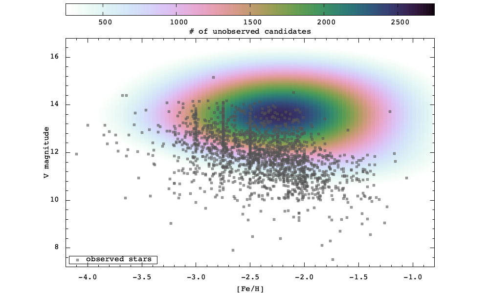

----------------------------------------------------------------------- r-process alliance - target list ----------------------------------------------------------------------- Created: 2017-12-11 (4107 stars) Updated: 2020-05-14 (7588 stars) Current version (txt): http://www3.nd.edu/~vplacco/rpa/rpa_targets.txt Current version (csv): http://www3.nd.edu/~vplacco/rpa/rpa_targets.csv ----------------------------------------------------------------------- Numbers (2020-05-14): ----------------------------------------------------------------------- Observed targets: 1925 stars Published snapshots: 225 stars Published portraits: 9 stars ----------------------------------------------------------------------- Columns: ----------------------------------------------------------------------- 01 - Name 2MASS Stellar identifier 02 - RA J2000 hex 03 - DEC J2000 hex 04 - RA J2000 deg 05 - DEC J2000 deg 06 - V mag 07 - BV mag 08 - J mag 09 - JK mag 10 - EBVA Reddening (from Schlegel et al. 1998 dust maps) 11 - TEFF 12 - LOGG 13 - FEH 14 - Observed 0 = not observed; 1 = observed 15 - Observer First two letters of observer's name. Xx otherwise. Ai: Ani Al: Alex An: Anna Ch: Charli Er: Erika Ia: Ian Ka: Kaitlin and Devin Ma: Maria Mn: Manoel Ra: Rana Sn: Sneden Te: Terese 16 - Date First date of the observing run (YYYYMMDD) 17 - Source Original source of the target. 7-character string: R: RAVE B: B&B L: LAMOST S: SkyMapper M: Melendez & Placco H: Hamburg/ESO O: Other 18 - Snapshot 0 or 1 19 - Tel. Snap 5-character string 20 - Portrait 0 or 1 21 - Tel. Port 5-character string 22 - Published 0 or 1 (snapshot) 23 - Published 0 or 1 (portrait) 24 - Paper 01 8-character string (see list below) 25 - Paper 02 8-character string 26 - Paper 03 8-character string 27 - Other_ID Other internal names on previous target lists ----------------------------------------------------------------------- Published Papers: ----------------------------------------------------------------------- 01: PLAC17AP (http://adsabs.harvard.edu/abs/2017ApJ...844...18P) 02: SAKA18AP (http://adsabs.harvard.edu/abs/2018ApJ...854L..20S) 03: HANS18AS (http://adsabs.harvard.edu/abs/2018ApJ...858...92H) 04: PLAC18AM (http://adsabs.harvard.edu/abs/2018AJ....155..256P) 05: HOLM18AP (http://adsabs.harvard.edu/abs/2018ApJ...859L..24H) 06: GULL18AP (http://adsabs.harvard.edu/abs/2018ApJ...862..174G) 07: CAIN18AP (http://adsabs.harvard.edu/abs/2018ApJ...864...43C) 08: ROED18AP (http://adsabs.harvard.edu/abs/2018ApJ...865..129R) 09: SAKA18BS (http://adsabs.harvard.edu/abs/2018ApJ...868..110S) 10: PLAC19AM (http://adsabs.harvard.edu/abs/2019ApJ...870..122P) 11: SAKA19AP (http://adsabs.harvard.edu/abs/2019ApJ...874..148S) ----------------------------------------------------------------------- Querying target list: ----------------------------------------------------------------------- (1) how many stars we observed so far? > curl -s -u \ observer:*2observe4U https://www3.nd.edu/~vplacco/rpa/rpa_targets.txt | awk '$14==1' | wc -l (2) what is the 2MASS name and n-SSPP params of R443130? > curl -s -u \ observer:*2observe4U https://www3.nd.edu/~vplacco/rpa/rpa_targets.txt | awk '$18~/R443130/ {print $1,$11,$12,$13}' ----------------------------------------------------------------------- Other resources: ----------------------------------------------------------------------- Linelist generator on github ---------------------------------------------------------------------------------------------------------------------------------------------- Vinicius Placco (www.nd.edu/~vplacco | vplacco@nd.edu) -----------------------------------------------------------------------
----------------------------------------------------------------------- r-process alliance - observed targets ----------------------------------------------------------------------- 
